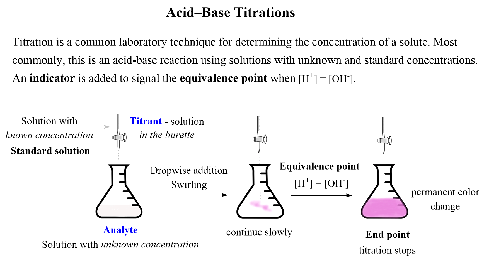
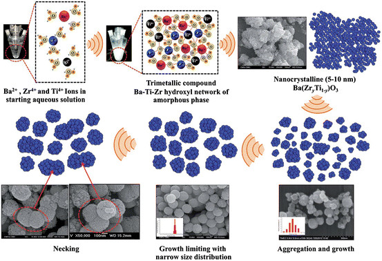

Chemistry
Welcome to the World of Chemistry
Explore the fascinating world of chemistry, from elements and reactions to exciting experiments.
Chemical Elements
Hydrogen
Oxygen
Carbon
Gold
Chemical Reactions
Discover various chemical reactions and their applications in different fields.
Hands-On Experiments
Acid-Base Titration

Learn about titration techniques and measure the concentration of acidic or basic solutions.
Chemical Crystal Growth

Explore the process of growing chemical crystals and observe their unique structures.